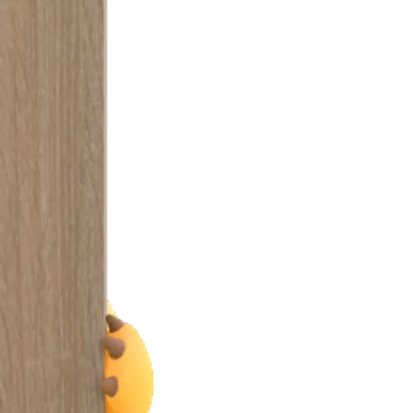

Hati Kamu
0%


Aku tau akhir akhir ini aku memang sering overthinking ini itu apalagi tentang sakit aku, aku cuma mau km buka ini yah sayang.

Aku sadar mungkin aku terlalu sering bikin kamu kecewa dan bikin kamu cemburu mungkin, aku cuma mau kamu sayang, tanpa adanya kebohongan. tolong yakinin aku, kalau kamu serius benar-benar serius sama aku

Aku tahu kata maaf aja atau lewat web aja ga bikin kecewa mu mereda, aku akan belajar pelan pelan untuk menghilangkan overthinking aku tentang itu, tp yg perlu kamu tahu, aku benar-benar mencintai, selalu.
sayang, aku mau kamu tahu kalau aku sama sekali ga bermaksud buat menghindar dari kamu, menjauh dari kamu, atau bahkan menghilang dari kehidupan kamu. tolong jangan pernah berpikir kalau aku udah ga mau kamu ada di sampingku, karena bukan itu maksudku. aku ga pernah berniat buat menjauh dari seseorang yang justru kehadirannya begitu berarti buat aku, bahkan sangat berarti. aku cuma ga mau kamu ikut terjerat dalam keadaan yang sedang aku hadapi. aku ga mau tanpa sadar kamu ikut memikul sesuatu yang seharusnya ga perlu kamu tanggung, sampai akhirnya semuanya terasa berat buat kamu. aku takut suatu saat nanti kehadiranku malah jadi beban di hidup kamu, membuat kamu terlalu banyak berpikir, mengorbankan banyak hal, atau merasa harus selalu ada buat aku bahkan ketika kamu sendiri juga punya banyak hal yang harus kamu hadapi.
aku tahu kamu punya kehidupan sendiri, punya mimpi yang ingin kamu capai, punya masa depan yang masih panjang, dan ada banyak hal yang masih ingin kamu perjuangkan. aku ga mau semua itu jadi terhambat hanya karena keadaan aku. aku ga mau kamu merasa harus bertahan dalam keadaan yang sulit hanya karena kamu sayang sama aku. kamu juga berhak bahagia, berhak menjalani hidup dengan tenang, dan berhak menikmati hal-hal baik yang masih menunggu kamu di depan sana.
tapi tolong, jangan salah mengartikan semua ini, ya, sayang. aku bukan sedang menyuruh kamu pergi, bukan sedang meminta kamu berhenti peduli, dan bukan berarti aku ga membutuhkan kehadiran kamu. kalau boleh jujur, aku juga ingin kamu tetap di sini, menemani aku, mendengarkan cerita aku, dan menjadi tempat aku pulang ketika semuanya terasa berat. aku juga ingin punya lebih banyak waktu sama kamu, tertawa bareng kamu, membicarakan hal-hal kecil yang ga penting, sampai merencanakan sesuatu yang mungkin sederhana buat orang lain, tapi berarti banget buat kita.
aku cuma sedang berusaha memikirkan kamu juga, bukan cuma perasaan aku sendiri. karena aku sayang kamu, aku ga ingin kamu kehilangan ketenangan hanya karena keadaan aku. aku ga ingin kamu merasa terikat oleh sesuatu yang membuat kamu kesulitan untuk melangkah. kalau selama ini aku terlihat seperti sedang mendorong kamu menjauh, maafkan aku, ya. mungkin aku terlalu takut sampai caraku menjaga kamu justru terlihat seperti aku ga menginginkan kamu lagi.
padahal kenyataannya bukan begitu, sayang. aku ga pernah menganggap kamu sebagai orang yang harus pergi ketika keadaan aku sedang ga baik-baik saja. aku cuma takut kalau suatu saat nanti kamu terlalu banyak terluka karena memilih untuk tetap tinggal. aku ingin kamu tetap bisa menjadi diri kamu sendiri, mengejar apa yang kamu inginkan, dan menjalani hari-hari kamu tanpa merasa seluruh tanggung jawab atas keadaan aku ada di pundak kamu.
jadi, tolong jangan berpikir kalau aku sedang berusaha melepaskan kamu karena aku ga sayang. justru aku sedang belajar menerima kenyataan bahwa menyayangi seseorang bukan cuma tentang ingin selalu bersamanya, tetapi juga tentang memikirkan bagaimana kehadiran kita memengaruhi hidupnya. aku sayang kamu, lebih dari yang mungkin bisa aku tunjukkan lewat kata-kata. aku cuma ga ingin rasa sayang ini membuat kamu merasa terbebani. aku ingin kehadiran aku menjadi sesuatu yang baik dalam hidup kamu, bukan sesuatu yang membuat kamu kehilangan kebahagiaan kamu sendiri...

Terima kasih sudah membaca semuanya. Semoga setelah ini kita bisa sama-sama memperbaiki semuanya.❤️